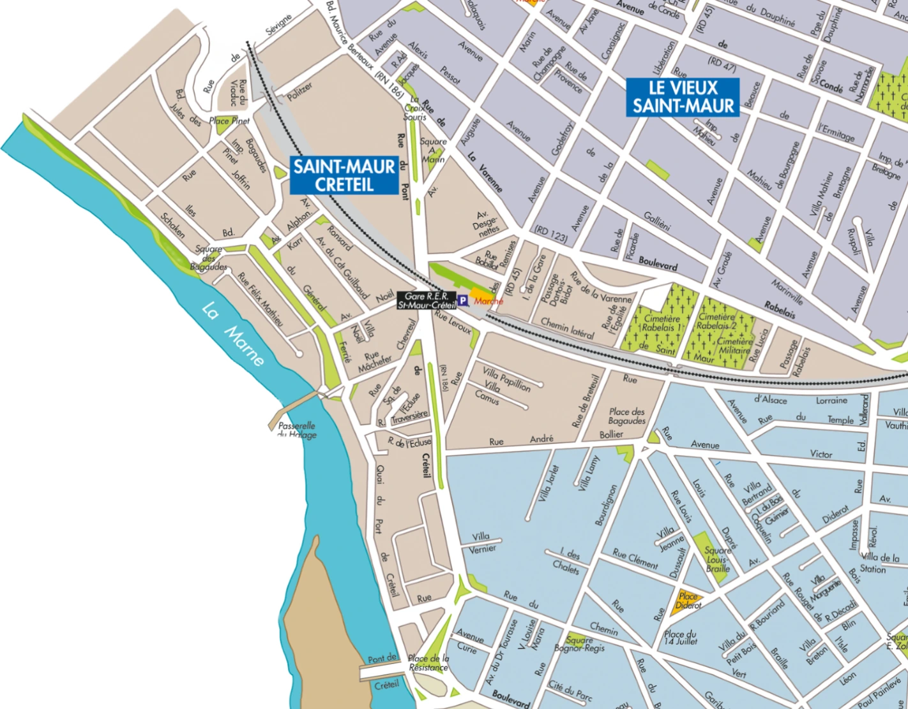
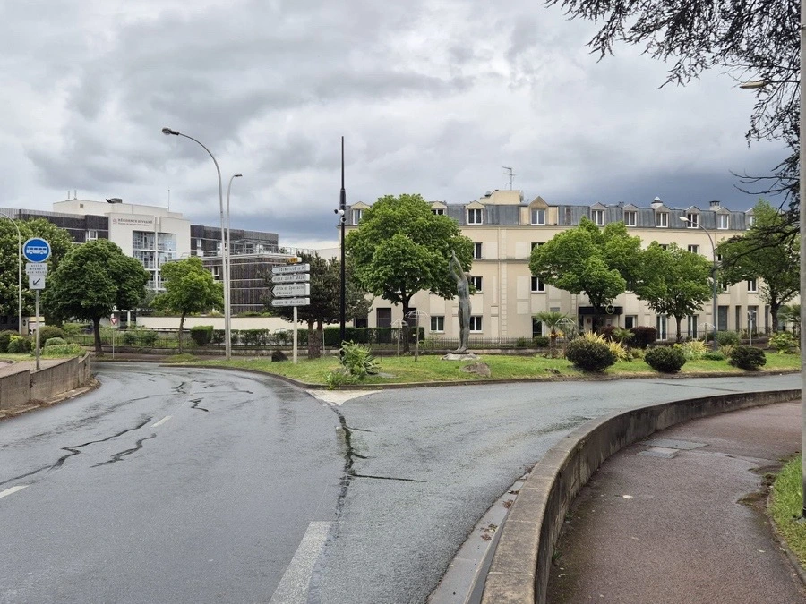
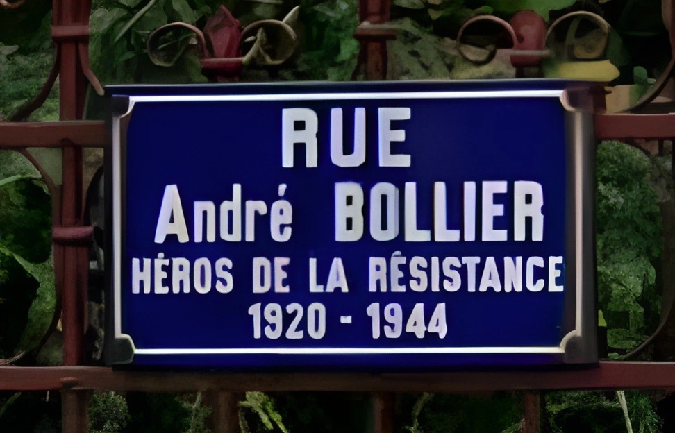
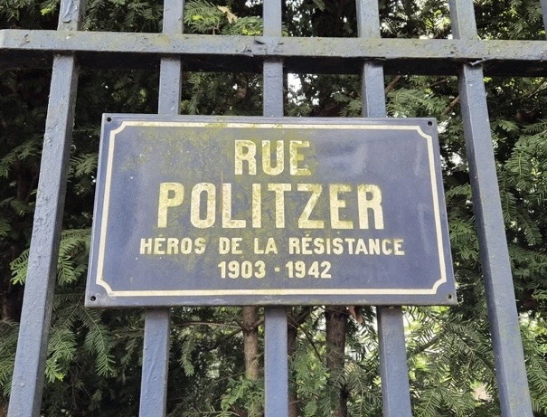

Retour à la carte
Le quartier de Saint-Maur Créteil

La place de la Résistance

Découvrez l'histoire de la place de la Résistance
La rue André Bollier

Découvrez l'histoire de la rue André Bollier
La Rue Politzer

Découvrez l'histoire de la Rue Politzer